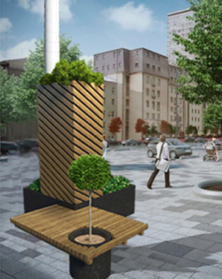

Эстетические решения.
Инфраструктура в архитектуре города

Оформление шкафов с термооборудованием
для скверов и парков в городской черте
Размещение термооборудования в нижней части опоры и оформление в виде скамейки для
жителей города
Декоративный шкаф для оборудования с подсветкой в ночное время
Декоративный шкаф для оборудования с подсветкой в ночное время
Декоративный шкаф для оборудования с подсветкой в ночное время
Декоративный шкаф для оборудования с подсветкой в ночное время
Декоративный шкаф для оборудования с подсветкой в ночное время
Использование элементов благоустройства и создания комфортного городского
простраства – клумбы и
скамейки - для оформления шкафов с
термооборудованием
Размещение термооборудования в нижней части опоры и оформление в виде скамейки для
жителей города